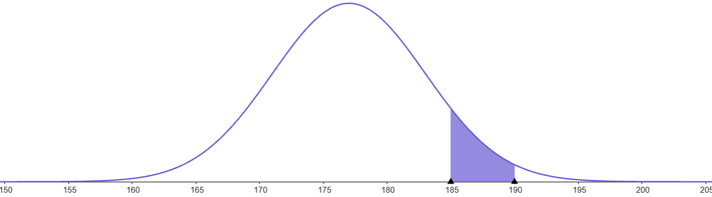

Droghe matematiche: la crisi del 2008

Ohi Glumpalott. Come butta?

Ciao Aleph. Che vuoi?
Ho deciso che nella mia vita devo impegnarmi per una nobile causa.
Ma va’? Ti dai alla collezione di francobolli?
No! Voglio lanciare un avvertimento fondamentale! Se ne parla poco e molti sono esposti a pericoli che ignorano.
Eh la miseria! E cosa accidenti dovresti dire?
Le droghe fanno male!
Io lo sapevo che parlare con te è tempo buttato.
Perché?
Vuoi unirti al carrozzone delle banalità? Lo sanno tutti che drogarsi fa male! E poi dipende da che sostanza, dalla dose e comunque se un adulto decide che...
Poi sono io quello banale. Risparmiami il comizio. Io sostengo fermamente che quasi nessuno parla dei danni delle droghe matematiche.
E che accidenti sarebbero?
Potenti artifici in grado di annebbiare la mente, distorcere la percezione del pericolo e far compiere azzardi.
Altri effetti?
Chi ne fa uso sembra intelligente ma non lo è.
Senti, non mi interessa! Se qualche nerd da due soldi si trastulla con giochini della settimana enigmistica, difficili quanto inutili, è affare suo.
Ti ricordi la crisi del 2008?
Vagamente. Fu un gran casino, giusto? Un sacco di gente perse il lavoro, qualche grossa banca chiuse i battenti. Una robaccia insomma.
Eh già. I terribili effetti delle droghe matematiche.
Che intendi dire?
Che questo è quello che può succedere quando si usa male la matematica. 4100 miliardi di dollari persi in pochi mesi. Quasi il doppio del Pil italiano dell’epoca (2007). E mi riferisco solo alle perdite degli Stati Uniti.
Dai, non ci credo. Qualcuno sbaglia un paio di numeretti e l’economia mondiale va al catafascio?
Be’ una crisi di quella portata ha parecchie cause. Una di queste però è una droga matematica.
Spiegati!
La prendo un attimo larga. Lo sai cos’è un CDO?
Come Dovrei Olocaustarti!
Quasi, è l’acronimo di Collateralized Debt Obligation. Una obbligazione di debito garantita. Si tratta di uno strumento finanziario appartenente alla categoria dei derivati creditizi...
Cosa cavolo ti aspetti che capisca? Non parlo quella lingua lì.
Hai ragione scusa. Facciamo facile facile. Immagina che un CDO sia un mega impacchettamento di debiti. Centinai a o migliaia di mutui, prestiti per l’acquisto di automobili, scoperti delle carte di credito di centinaia di cittadini tutti ammucchiati in un gran calderone. Ecco questa roba poi la si vende.
Si direbbe mondezza. Perché qualcuno dovrebbe prendersi la briga di fare una cosa del genere?
Be’ facciamo l’esempio con un singolo cittadino. Diciamo che vuoi comprare una casa. I soldi per pagarla oggi non li hai quindi vai in banca e chiedi un prestito ingente. Li restituirai nel tempo con qualche extra. Ogni mese paghi una cedola: restituisci un po’ del denaro preso in prestito e ci aggiungi qualche spicciolo.
Ok. Ha senso. La banca mi presta i soldi. Ne ha un sacco, non gli servono mica tutti oggi! Piano piano li recupera ma intanto ci guadagna. Se fa tanti mutui guadagna un sacco.
Esatto. Magari, però, la banca non ha voglia di aspettare. Dopo qualche tempo che ha detenuto il tuo debito fa un patto con un altro cliente. Un privato o magari un altra banca. L’acquirente acquista dalla banca il debito e sarà lui d’ora in poi a ricevere le cedole.
Ha senso. Se ho dei soldi che mi avanzano potrei farlo pure io, giusto per farli fruttare.
Sì ma non ti consiglio di lanciarti in queste cose senza paracadute. Cosa succede se, per qualche ragione, il tizio che ha comprato la casa con i soldi della banca non riesce a pagare le cedole?
Eh la banca rimane fregata!
Oppure rimani fregato tu che hai comprato dalla banca quel debito.
Ho appena capito perché alle banche può venire voglia di vendere i debiti.
Molto scaltro.
Grazie, ho sempre avuto un grande spirito imprenditoriale.
Che lavoro fai scusa?
Quindi dicevi che i CDO sono un mega mucchio di debiti impacchettati tutti insieme e venduti.
Esatto. A prima vista sembra una grande idea. Se ho un sacco di debitori non rimarrò fregato. Non falliranno mica tutti contemporaneamente!
Sì mi ricordo che questa cosa un po’ me l’avevi spiegata. La probabilità che accadano tante cose in sequenza, come tirare tante volte una moneta e ottenere sempre testa, è molto improbabile.
Sono fiero di te campione
Ma senti, quindi i CDO sono un ottimo investimento no? Fai fruttare il denaro con bassissimi rischi. Ne vado a comprare due.
Frena frena campione. E’ più complicato di così.
Ecco, lo sapevo. Addio sogni di ricchezza!
Proviamo a ripensare al singolo debito. Se ritieni che un debitore ha molte probabilità di diventare insolvente compreresti il suo debito?
Dipende… magari se il prezzo è basso o gli interessi molto alti potrebbe valere la pena di rischiare qualcosa. No?
Bingo! Se un debitore ha un lavoro stabile, magari una famiglia alle spalle e buone possibilità di carriera i soldi li presti volentieri e ti accontenti di interessi bassi. A un morto di fame che non riesce a tenersi un lavoro per più di due settimane ci pensi due volte.
Mi pare naturale.
E qui arriva la matematica. Abbiamo bisogno di un metodo efficace per stabilire a che prezzo conviene acquistare un debito. O un grande insieme di debiti. In altre parole: come facciamo a sapere quanto vale un CDO?
Immagino che dipenda da cosa c’è dentro. Chi sono i debitori? Quanti soldi devono restituire? Con che interessi? In quanto tempo?
Bravo. Immagino che ti sia reso conto che non è affatto intuitivo attribuire un prezzo ad un pacchetto di migliaia di debiti.
Sinceramente non saprei da dove partire.
Sei in ottima compagnia. Ti svelerò un segreto. Anche a Wall Street non era perfettamente chiaro.
Quindi hanno lasciato perdere tutto e si sono dedicati ad investire in ricerca e sviluppo?
Il confine fra malvagità e stupidità alle volte è oltremodo opaco.
Sento che ora arriva la fregatura.
Già. Abbiamo capito che il prezzo di un CDO dipenderà dalla probabilità di insolvenza dei creditori giusto?
Giusto. Più è alta la probabilità che i debitori falliscano minore sarà il valore del CDO. Io almeno farei così.
Perfetto. Ora taglio uno spiegone matematico super incazzato e semplifico enormemente. Devi sapere che esistono delle robette chiamate distribuzioni di probabilità.
Sarebbero?
Una distribuzione di probabilità in soldoni è una qualche formula che ti fa vedere come varia la probabilità di un evento. Prendiamo la più facile di tutte: la gaussiana.

Vedi? Sull’asse x hai una qualche variabile. Che ne so, l’altezza di un individuo. L’area sottesa dalla curva fra x1 e x2 indica la probabilità che una persona abbia un’altezza compresa fra x1 e x2. L’intera area rappresenta una probabilità del 100%, una sua parte un po’di meno.
Sembra facile.
Non fidarti delle apparenze, non lo è. Ovviamente non siamo obbligati a mettere sull’asse x l’altezza potremmo metterci le perdite del CDO.
Aspetta mi sfugge qualcosa.
Diciamo che la gaussiana descrive la distribuzione delle perdite. L’area compresa da un certo valore di x in poi rappresenta la probabilità di avere perdite pari o superiori al valore di x.
Ok. Mi pare abbastanza sensato. L’area è sempre più sottile man mano che ci spostiamo verso destra. Quindi perdite catastrofiche sono sempre più improbabili. Giusto?
Esatto. Tieni conto che nella realtà le cose sono più complicate e si usa uno strumento più complicato della sola gaussiana, si chiama copula gaussiana. L’idea di fondo però l’hai capita. Se abbiamo la distribuzione di probabilità possiamo usarla per dare un prezzo al CDO. Ovviamente se la probabilità di avere ingenti perdite è alta avrà un prezzo stracciato. Se invece la probabilità di guadagni è buona avrà un prezzo alto.
Quindi chi studia finanza fa questa roba nella vita?
Grosso modo.
Però, insomma. Mi sembra che ci abbiano lavorato dei cervelloni. Non si direbbe un lavoro da qualunquisti. Sarà roba seria.
Vero? Mica facile accorgersi della fregatura.
Ma è veramente una fregature? Non si direbbe il tizio “veramente euforico” che vuole venderti un metodo sicurissimo per guadagnare.
Il problema è che non basta che un modello matematico sembri convincente. Deve essere aderente alla realtà. Guarda quest’altra distribuzione.

Un altra gaussiana?
Sembra vero? Stesso andamento calante, stessa forma simmetrica, stesso profilo a campana. Ma no, non è una gaussiana. Confrontiamole

Mi sembrano un po’ la stessa roba sinceramente.
Anche a me, ma non lo sono. Non lo sono affatto. Sono distribuzioni completamente diverse. La seconda curva appartiene ad una famiglia chiamata power law. Vedi che le sue code rimangono sempre sopra a quelle della gaussiana?
Sì, e allora?
Vuol dire che nelle code, che rappresentano gli eventi estremi, c’è un area maggiore rispetto a quella della gaussiana.
Vuoi dire che nella power law è molto più facile che si realizzi un evento catastrofico?
Esatto. Esatto. Questo tipo di distribuzioni, a differenza della gaussiana, vengono dette a code spesse. Proprio perché gli eventi catastrofici sono molto più probabili. Ce ne sono un sacco oltre alle power low. E ora indovina! Per descrivere le perdite dei CDO cosa funziona meglio? Code spesse o code sottili?
Che è successo?
E’ successo che il modello gaussiano sottostimava enormemente la probabilità di un evento come quello del 2008. Sembrava impossibile che in così tanti andassero in default contemporaneamente.
Un errore matematico ha causato un disastro di quella portata? E nessuno si è accorto del problema prima del patatrack? Che cavolo li pagano a fare?
Ottima osservazione. Non so quanto ti faccia piacere saperlo ma sì: qualcuno se ne era accorto.
EEEEH? Qualcuno sapeva che c’era una crisi in arrivo e non ha fatto nulla?
No. Non sapeva che sarebbe arrivata la crisi, sapevano che il modello era molto problematico e non poteva essere utilizzato. Ci sono articoli precedenti il 2008 che fanno ampiamente notare che la cosa non può funzionare. Checché se ne pensi i matematici non sono mica scemi.
E allora?
E allora si è andati avanti lo stesso. Il modello ormai era integrato nei pc delle agenzie di rating e delle banche.
Che cavolo sono le agenzie di rating?
Sono agenzie il cui compito, in estrema sintesi, è valutare la sicurezza di uno strumento finanziario. Sono loro che certificano se un investimento è classificabile come AAA o meno.
Perché adesso parliamo di pile?
AAA indica un investimento molto sicuro.
Ok, e quindi anche loro usavano il modello per stimare le probabilità di perdita. Ma perché non l’hanno cambiato di corsa appena ci si è resi conto che qualcosa non andava?
Eh sai. Non era proprio comodissimo. Ormai ci avevano fatto il callo. E poi è un modello semplice comodissimo.
E’ così tanto più comoda la gaussiana rispetto alla power low?
Sì e poi non è solo questo. In un CDO ci sono, diciamo, 125 differenti debiti. Non sono indipendenti l’uno dall’altro. La probabilità che uno fallisca può influenzare la probabilità che falliscano anche gli altri.
Ehm ok. Ma perché?
Be’ l’economia è un sistema complesso in cui gli agenti si influenzano a vicenda. La faccio super semplice: Giampieraldo è con l’acqua alla gola e non riesce a pagare il mutuo. Taglia quindi le spese e non va più a comprare il suo gelato della domenica. Anche il gelataio ha un debito però, e adesso prende meno soldi anche lui perché Gianpieraldo è in difficoltà.
E questi modi di influenzarsi possono essere studiati ed inseriti nelle equazioni?
Certo, ma è complicato. Un CDO contente 125 debiti che si influenzano fra loro necessita della bellezza di 7750 parametri per descrivere le varie relazioni.
Mi pare di capire che siano tantine.
Esatto. E anche potendo misurarle è un bel casino per il computer che le deve gestire tutte quante. Ma tranquillo. A Wall Street hanno trovato una soluzione geniale!
Cioè?
Hanno deciso che quei 7750 parametri erano tutti uguali.
Ma era vero?
Ovviamente no. Giampieraldo ama il gelato ed influenza il gelataio. Ma Giampieraldo non va mai al ristorante chetogenico (mica scemo) e quindi non lo influenza.
Ma perché hanno fatto una cosa del genere?
Perché era facile. Perché poi il computer funzionava benissimo. Perché così vendevano una marea di mondezza. Sulla carta era AAA, perché con la gaussiana sembrava impossibile che fallissero tutti insieme. Ma erano AAA solo sulla carta.
E sono stati tutti a guardare?
Be’ la stragrande maggioranza di chi lavorava nel settore nonle sottigliezze del modello gaussiano. Però, come dici tu, sembrava proprio roba seria. E ci si cullava nel quieto torpore indotto da una formuletta. Tanto non era mai successo niente.
E le agenzie di rating? Cavoli dovevano certificare la bontà degli investimenti. Non si sono fatti venire nessuno scrupolo?
Peccato che venissero pagati dalle banche che emettevano i CDO. Avevano un enorme interesse a dargli la loro bella dose di AAA. Altrimenti andavano dalla concorrenza.
E gli intermediari che dovevano vendere ai privati tutta quella mondezza?
Bah quelli sì che non capivano nulla di matematica. E comunque, anche loro, venivano pagati dalle banche in base a quanta mondezza riuscivano a piazzare.
E lo stato? Non fece nulla?
No. Si veniva da anni di deregolamentazione e si era data moltissima libertà alle banche. Molta più di quella che sarebbe prudente concedere.
Non capisco.
Cosa?
Non riesco a capire se si è trattato di un’enorme malvagità o di una colossale stupidità.
Non saprei dirti bene, me lo chiedo anch’io. Immagino che dipenda. Alcuni non capivano. Chi doveva sorvegliare non lo ha fatto. Chi ha avuto qualche dubbio si è lasciato cullare da formulette. Be' nessuno qua ci fa una gran figura.
Però, senti! Ora non me la raccontare! I dirigenti delle banche lo avranno saputo. Loro sono tutti criminali.
Qualcuno immagino di sì. Ma non tutti.
Come mai tanto garantismo?
Se le banche fossero state completamente convinte che quei CDO fossero roba pericolosa se ne sarebbero disfatte. Molte banche invece li compravano da altre banche. Era diventato parte della cultura finanziaria dell’epoca.
Ma scusa una cosa però. Quando le difficoltà sono arrivate qualcuno non è riuscito più a pagare. E come hanno fatto a trascinarsi dietro tutti gli altri?
Il livello di debito con bassa probabilità di essere ripagato in circolazione era elevatissimo. Praticamente è bastato che l’economia rallentasse perché una marea di gente diventasse insolvente. Considera che si concedevano mutui per case da centinaia di migliaia di dollari a persone che non avevano uno stipendio.
Mai fai sul serio?
Li chiamavano mutui Ninja: No Income No Job No Assets (Nessuna rendita, nessun lavoro, nessuna proprietà)
Ma perché qualcuno dovrebbe prestare soldi a chi palesemente non può restituirli?
Perché il giorno dopo impacchettavano il debito in un bel CDO e lo vendevano a qualcun’altro che non si prendeva la briga di controllare cosa ci fosse dentro. Tanto era certificato AAA. Loro guadagnavano sulle commissioni e si disfacevano del problema.
Ragazzi che incubo. Ma quante persone ci potevano essere così disperate, o fuori di testa, da contrarre debiti del genere?
Più di quanto immagini.
E c’erano così tanti compratori di CDO? Insomma non mi pare che il grosso della gente si metta ad acquistare questo tipo di cose senza capirci nulla.
Primo: non sottovalutare mai né la stupidità né la malvagità di noi umani. Secondo di quei CDO ne vennero comprati una marea per varie ragioni. Ad esempio vennero acquistati per garantire piani pensione.
E quando si scoprì che non valevano nulla?
Addio pensione. Stessa scena per le aziende che li avevano acquistati per garantirsi un futuro più sicuro
Ma come mai la cosa ha colpito anche il resto del mondo? Se in America giocavano alla roulette russa perché ci siamo finiti in mezzo?
Innanzitutto ricordati che il discorso di Giampieraldo vale anche in grande. In economia i sistemi si influenzano a vicenda. E poi quei bei CDO non sono rimasti in America. Sono stati acquistati da altre banche e altri privati in giro per il mondo. In questo modo il debito insolvibile si è diffuso come un virus. E ad un certo punto si è scoperto che erano soldi buttati.
Non avrei mai immaginato che potessimo frullare così male stupidità e malvagità.
Migliaia di miliardi di dollari bruciati, milioni di persone persero il lavoro, milioni di famiglie si ritrovarono senza casa e il tasso di suicidi schizzò verso l’alto.
Quindi?
Quindi tieni il cervello attaccato e non ti drogare cazzo!
Se è una battuta non mi viene da ridere
Nemmeno a me.